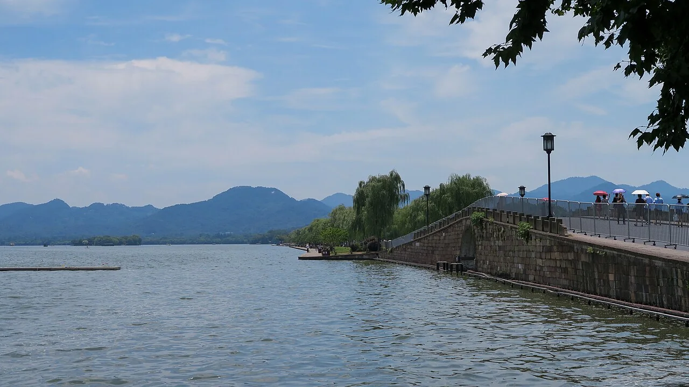

行！整！
XIAOMIAO'S POCKET TRIP
选择景点
游览总图
杭州 · 10.30 / 听见湖山文脉
西湖北线
一湖山色，半部杭州文人史
断桥—白堤—孤山—岳庙，沿湖听见杭州的文化层次。
▶ 历史开篇
8 段 · 约 21 分钟

实景照片署名 ↗
白堤 / 孤山 / 岳庙
循湖听故事
总览
F1
F2
F3
−
100%
＋
复位
相对方位示意，以现场开放区域为准。
西湖文化景观 ↗
← 博物馆总图
先读懂这一间展室
展室总览 ·
▶ 听展室介绍
−
100%
＋
复位
▶ 听这段讲解
完整讲稿与参考来源
×
上段
−15秒
+15秒
下段
1×
连播
请开启 JavaScript 后选择地图上的景点。